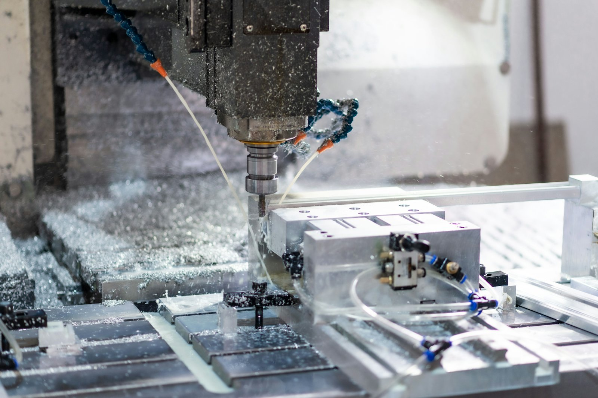

GET YOUR MACHINES DIALED IN.
CNC repair that keeps production moving. Dayton-based troubleshooting, repair, calibration, alignment and preventive maintenance for metal manufacturing shops within 150 miles.
WHEN A MACHINE
STOPS, EVERYTHING
STOPS.
National firms take days. OEM dispatch takes longer. A generalist guesses. Meanwhile your spindle is silent and your deadline isn't moving.
FIVE FAILURE MODES THAT KILL PRODUCTION →
Precision is not a feature. It's the standard.
One owner. A decade of multi-platform CNC service. On-site, fast, and diagnosed right the first time — so your machine gets back to cutting metal.
SERVICE
CAPABILITIES
Specialized electrical and mechanical CNC repair — exclusively for metal manufacturing machines, delivered on-site by Kevin personally.

Mills, lathes, 5-axis and mill-turn — across Haas, Fanuc, Mazak, Okuma, Siemens and more. Diagnosed and repaired on your floor, not shipped out.
Troubleshooting & Diagnostics
Machine alarms, recurring faults, servo and axis issues, spindle symptoms, control and communication faults — diagnosed accurately and fast.
CNC Electrical Repair
Controls, wiring, drives, sensors, motors, encoders, panels and power supply issues across Fanuc, Siemens, Mitsubishi, Heidenhain, Okuma, Haas, Mazak and DMG MORI.
CNC Mechanical Repair
Machine tool accuracy, axis and lathe alignment, geometry issues, integrated machine tools, mill-turn equipment and mechanical reliability problems.
5-Axis Calibration & Repair
High-value specialty service for advanced 5-axis machines: calibration, accuracy validation and repair for confidence in every part.
Installation & Geometry
Setup support, geometry checks, accuracy validation and installation-related performance issues for new or relocated equipment.
Preventive Maintenance
Scheduled service visits to identify wear, verify machine condition, reduce unplanned breakdowns and build long-term reliability.
CNC experience
radius from Dayton
serviced & supported
No dispatcher, no ticket
“Over 10 years of multi-platform CNC service experience with a precision-first approach to minimizing downtime and supporting long-term machine reliability.”
FROM ALARM
CODE TO CUTTING
No ticket system. No hand-offs. One call reaches Kevin — the same person who diagnoses, repairs and verifies your machine.
You Call Kevin
Machine down? You get the owner on the phone — not a queue. A decade of CNC experience starts triaging the symptom, the platform and the alarm code before the truck even rolls.
HOW WE
SHOW UP
Three ways to work with Dialed In. Pricing is scoped to the machine and the fault — call for current availability and a straight answer.
Emergency Repair
Machine down and production stopped. The fastest path back to cutting metal.
- Rapid on-site diagnosis
- Electrical & mechanical repair
- Servo, drive & alarm-code faults
- Owner on the job — not a sub
Scheduled Service
Diagnostics, calibration, alignment and repair planned around your production schedule.
- 5-axis calibration & validation
- Geometry & alignment correction
- Installation & relocation support
- Multi-platform expertise
Maintenance Plan
Scheduled visits that catch wear before it stops production and protect long-term accuracy.
- Preventive maintenance visits
- Machine condition verification
- Wear & accuracy tracking
- Priority when something breaks
LET'S GET IT
DIALED IN.
937-901-0935
DAYTON, OHIO · SERVING WITHIN 150 MILES · DIALEDINCNC@GMAIL.COM
CINCINNATI · COLUMBUS · INDIANAPOLIS · LIMA · TOLEDO · NORTHERN KENTUCKY